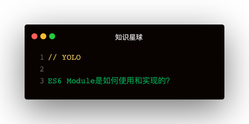

ES6模块基本语法
从其他模块导出
1. export * from './module'
2. export { name1, name2 } from './module'
3. export { v1 as name1, v2 as name2 } from './module'
4. export { default as name } from './module'
导出自己模块的属性
1. export const NAME = 'leo'
2. export { NAME }
3. export { v1 as NAME }
4. export default {}
5. export { v1 as default, v2 }
default是个啥？跟export的其他属性什么关系？
default情况webpack打包情况
写一个简单的demo：
<!-- 1.js -->
import m from './2'
console.log(m)
<!-- 2.js -->
export default { name: 'leo' }
来看下webpack对这两个文件打包之后变成啥样？👇
<!-- 1.js -->
var _2_js__WEBPACK_IMPORTED_MODULE_0__ = __webpack_require__("./2.js");
console.log(_2_js__WEBPACK_IMPORTED_MODULE_0__["default"])
<!-- 2.js -->
__webpack_require__.r(__webpack_exports__);
__webpack_exports__["default"] = ({
name: 'leo'
});
就这样完事了。一个设置了default，一个拿default来用
属性导出情况webpack打包情况
下面看看导出属性是怎样👇：
<!-- 1.js -->
var _2_js__WEBPACK_IMPORTED_MODULE_0__ = __webpack_require__("./2.js");
console.log(_2_js__WEBPACK_IMPORTED_MODULE_0__["name"])
<!-- 2.js -->
__webpack_require__.d(
__webpack_exports__,
"name",
function() { return name; }
);
const name = 'leo'
可以看出default是赋值到webpack_exports上的，而单个属性是使用defineProperty定义getter的，这么做是为什么？
ES6导出的是值引用，default是引用类型，而一般变量是基本类型，所以基本类型用getter
这么做因为采用了闭包的原理所以name改变之后，通过getter获取仍是最新值，那么对于default的情况仍然适用吗？
如果export default { name }, 那么又是如何处理的？
<!-- 稍微修改下2.js -->
let name = 'leo'
export default { name }
name = 'hello'
<!-- webpack打包之后，1.js未变，2.js如下 -->
let name = 'leo'
__webpack_exports__["default"] = ({ name: name });
name = 'hello'
试了下输出leo，而不是hello，说明export default的模式导出的是default引用，而其中属性改变是无法侦测到的。
export的是函数webpack是怎么处理的？
__webpack_require__.d(__webpack_exports__, "name", function() { return name; });
__webpack_require__.d(__webpack_exports__, "changeName", function() { return changeName; });
let name = 'leo'
const changeName = function () { name = 'hello' }
可以看出函数和变量是一样处理的
webpack是如何实现ESM的？
(function (modules) {
let _cache = {}
function __webpack_require__ (moduleId) {
if (_cache[moduleId]) {
return _cache[moduleId]
}
let module = _cache[moduleId] = {
id: moduleId,
l: false,
exports: {}
}
modules[moduleId](module, module.exports, __webpack_require__)
return module.exports
}
__webpack_require__.d = function (obj, prop, getter) {
Object.defineProperty(obj, prop, { get: getter })
}
return __webpack_require__('./1.js')
})({
'./1.js': (function(module, __webpack_exports__, __webpack_require__) {
const module_2 = __webpack_require__('./2.js')
console.log(module_2['name'])
}),
'./2.js': (function(module, __webpack_exports__, __webpack_require__) {
__webpack_require__.d(
__webpack_exports__,
'name',
function () {
return name
}
)
const name = 'leo111'
})
});
执行IIFE函数时，最后要执行webpack_require('./1.js')，执行入口函数进行启动